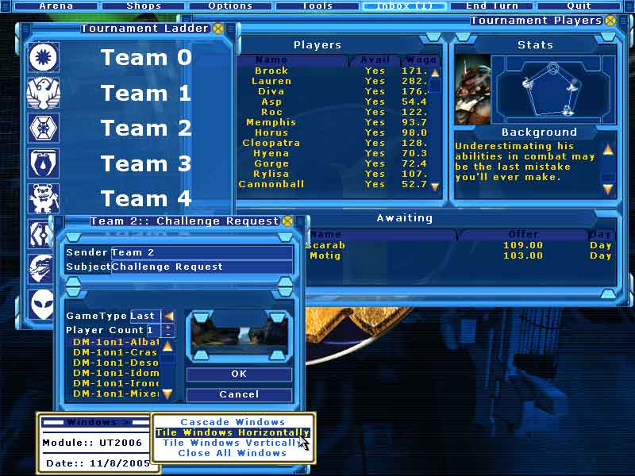
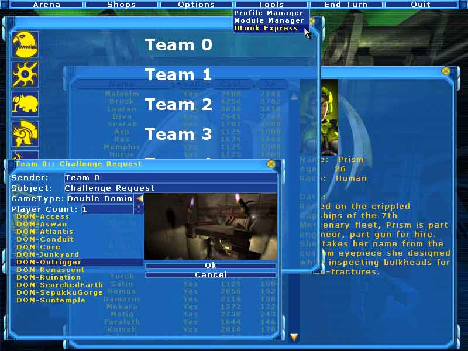

Solid Snake/Module UT2006
Introduction
This is one of the first module to be made for Chaos Engine platform (possibly the only one, since UT2007 is just round the corner. The majority of Chaos Engine should be transferred), there were other modules planned as well ... but this seemed to be the easiest one to accomplish with the amount time given. This game is using the Unreal universe for a sports management sim.
The mod allows players to play UT2006 from three different angles.
* A Coach
* A Tournament Player
* A Liandri Corp InquisitorHowever, at this point only the coach perspective will be worked upon at this stage. The players role in the first two roles is to win every tournament, which lasts for several cycles (cycles being an undefined period at this point). Once the tournament is complete, the player can continue to play with the same characters without stopping. In the Inquisitor role, players control how the tournament is setup and makes sure that everything is set for the tournament.
Essentially, you are the coach of a team that must compete against other coaches in a ladder based tournament. Your responsible for the management of your team members (from recruiting, to maintaining their happiness, to making sure the team works well together), management of the team's money (you need money to buy things with!), sorting out your matches ... and a lot more other roles. Because you have to do many tasks at once, multiple window support was required for this module. However, Chaos Engine already had strong Windows support for a long time, so it was natural that this be one of the first modules to be developed.
The three roles were designed to appeal to different groups of gamers. The coach role is designed for those who like a simulators and the RPG aspect. The player role is designed for those who do not want to be bothered by the aspect of setting up matches, but rather enjoy normal UT2004 play, with a some RPG elements. The Inquisitor role is designed for those who prefer RPG's and micro-management.
About
A lot of people have asked me exactly what is UT2006 and why I keep switching between UT2006 and Unreal League. UT2006 isn't a remake of UT2004, nor is it a patch for UT2004 to make it look/play/feel better than the original. I've also kept a backup name just in case Epic ask me not to use UT2006 as it could mislead a lot of people ... which it already has done so! From here on, I will refer to the project as UT2006.
UT2006 is a single player only module for Chaos Engine. To reiterate again, Chaos Engine is merely a mod platform in which actual mods can be developed for. Chaos Engine provides a lot of base ground work and code which make it easier to make this mod possible. For example, the entire interface is powered by Chaos Engine's interface system. The file management is powered by Chaos Engine's file management system. I hope to have many modules for Chaos Engine, the best ability for Chaos Engine is that it is able to switch between the modules without needing a restart of UT2004.
Anyways, UT2006 puts the player into a 'coach' position. There are a total of eight competing teams in which you are one of. Unreal Tournament is sort of like an Olympics as such, and these eight teams are similar to competing countries in the real Olympics. Everytime you play a match against a team, you are awarded points/money. The points are used to position the teams in a ladder, while the money is used for the team (to pay the team players, etc). There are many tools available to the player as a coach.
With this module, I hope to increase the single player experience while using the UT2004 content. So this hopefully means for a small module (in file size) packed with a lot of fun, but we will see how it goes.
Design - Coach
I will primarily talk about this player role, since it will be created first and fore most. The other two player roles can be added on later, either as a patch or a bonus pack.
Players assume the role of a coach who leads a team to victory in the Tournament. The player will be playing against 7 other AI coaches. Currently, there is no difficulty setting at this point, however, it will be implemented later on (Higher difficulty in regards to making coaches smarter rather than just having 'bonuses' that you don't.). Coaches are responsible for the creation of the team, by hiring tournament players. As shown in the image below.
The simulation side of things is things like this, where the player is assembling a team, training the team, making offers/bribes/blackmail to other teams and so forth. The RPG role is also apparent because coaches, players and other characters are all persistent entities within the game. They all remember what you have done and will act on those accordingly. Thus building relationships with these NPC's are important. You are also responsible for how your team levels up, and what skills they learn and so forth. While you are not in combat, you are playing the role of a character ... who just happens to be the coach.
Another aspect of UT2006 which differs to UT2004 is how the matches are setup. As the coach, you are responsible for scheduling matches against the other coaches. In this image, you see the uMail that you send to other coaches. The system works like a real-life clan match ladder system. That is, that you uMail respective competitors for a match, if they agree to the terms that you have set for the match they will agree to play a match with you. If they do not, they may negotiate small changes to the match rules. Because of this, you can now play any gametype, any mutator, any map that is available to UT2004. Provided that the mutators/maps have bot support it should work flawlessly, however, AI coaches will often prefer vanilla matches ... although you can convince them to play other styles. Matches are the main source of your income (There are also secondary means ... ) ... but the discussion of this is not neccessary within this context.
The other aspect of this role is the combat role. When you are playing match, you are the coach on the side lines at the match. Your entire team is controlled by the bot AI already found in UT2004. Their skill level will be adjusted accordingly to the NPC stats (The RPG element remember). As the coach you decide what weapons each team will be carrying, who to adminster health to, and so forth. Unlike normal UT2004, players do not frag each other. They only knock each other unconcious. Weapons will be toned down to allow for longer matches, however a lot of things are changed. For example, players do not run around looking for health/weapons. They do run around looking for ammo and bonus pickups (such as the double damage). When they are knocked unconcious the player will automatically be pulled out of the arena (NPC's do not liked to be knocked out, and will also need to be hospitalized ... costing you money and a bonus payment to make them happy about being knocked out, etc etc). You can decide at anytime to pull players on and off the field depending who you have in your team. Balancing comes in the form of pre-defined match points. That is, every weapon + addon and items are all worth a certain amount of points. Coaches must equip their players with weapons and items which is either below or equal to the match points. This is how balanced is retained, and that even if you are poor you can still have matches between other coaches. (Note, there is no 'mysterious benefactor' in this mod. If you run out of money and are heavily in debt, you will lose.). In the player role, things are a little different, but I will talk about this when the time is right. There are other differences in the coach role, in combat ... but this is at least a glimpse.
Screenshots

Latest screenshot. 11th of August, 2005. Its shaping up rather nicely I think. I've started to add the visuals into the windows and it really looks rather snappy now! w00t! ![[UT2006_B]](images/ut2006-b.jpeg) This is the main menu screen. Lots of pretty renders of all the characters that you will encounter in UT2006. 
This is how 'normal' gameplay is like. Usually my testing is done on the 800 X 600 level, so this is probably why the windows are so cramped here. FPS is still a bit of an issue with uWindows, and I have a fair idea of how to make it run faster but I don't think I can really do a lot. However, it takes a long time before the FPS because gets so low you can no longer use it... thankfully. |
Comments
_Lynx Hey man! Have I told you i want to use your ChaosEngine for an SP mod? UT2006 is very similar to what I wanted to do! But while you want to make a manager (as I understood from that page), I'm thinking of something like a Dynasty mode in NHL series, where you also can play. I wanted to add some more detail, and may be some storyline like in Tribes: Vengeance. I think of the interface as a players' personal terminal, within which hу can manage his team, access the league's latest news, recieve e-mails from team members, opponents and league officials, watch the matches of other teams, see the the stats. May be it can be made as a module system allowing to add features.